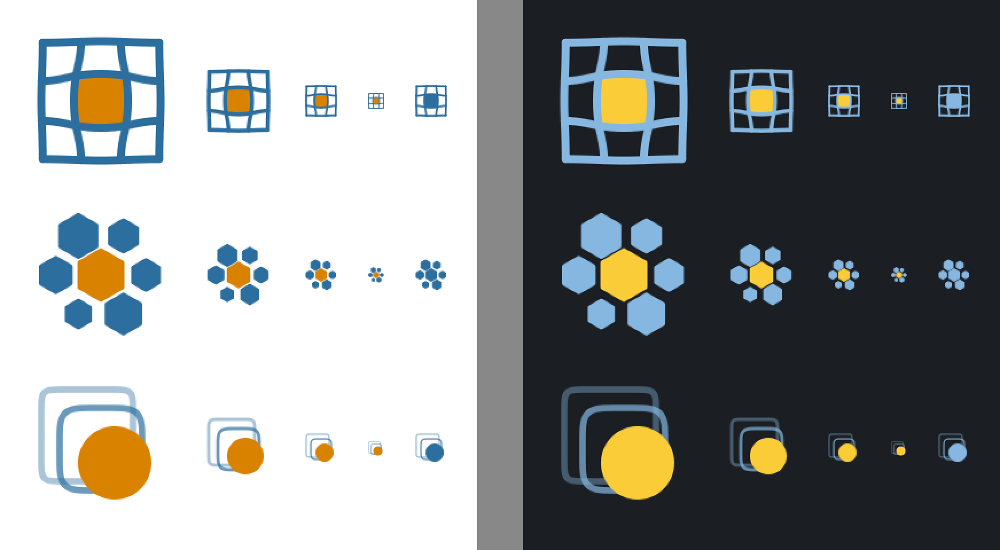

Three mark concepts drawn as SVG from the library's own light and dark style colors, shown at 128, 64, 32 and 16 px on the light and dark surfaces of the docs and in one color. The warped grid reads best at small sizes and says "flow cartogram"; the hexagon cluster covers the symbol and tile cartograms; the morph concept is the weakest.
marks.py <out_dir> writes <concept>-light.svg and <concept>-dark.svg for each concept (committed in svg/); fig.py draws the legibility figure. The marks are plain geometry, so they carry no licensing constraint from fonts or third-party artwork (original work, covered by the project's MIT license).
| Concept | Idea | At 16 px | In one color | Covers |
|---|---|---|---|---|
| Warped grid | A 3x3 grid bent around a centre cell that has grown to its data value | Frame and centre cell hold; interior lines blur | Frame plus a filled centre cell stays distinct | Flow cartogram (the core algorithm), and by extension the area-rebalancing idea of the others |
| Hexagon tiles | Seven hexagons of different sizes, the centre one amber | A rosette; the size differences are lost | Becomes a blob | Symbol and tile cartograms (mosaic layout) |
| Morph | Three nested outlines going from a rounded square to an amber circle | The circle holds; outlines vanish | Works | Morphing in general; no direct link to maps or areas |
Wordmark with the name carto-flow, favicon set (SVG, 32 px and 180 px PNG), 1280 x 640 social preview, usage note in docs/, theme.logo and theme.favicon in mkdocs.yml, the README header with a <picture> dark-mode variant, a WCAG contrast check of both variants against the docs surfaces, and the PyPI metadata.

Rows: warped grid, hexagon tiles, morph. Left half light surface, right half dark surface. Columns: 128, 64, 32 and 16 px, then 32 px in one color (the amber part drawn in the blue). Renders are 1:1, the figure is enlarged 2x with nearest-neighbor so the pixels stay visible.